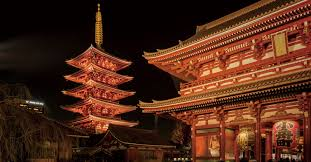
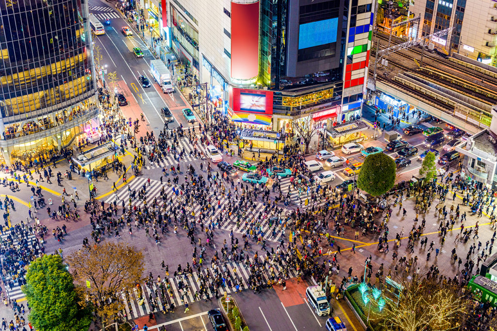
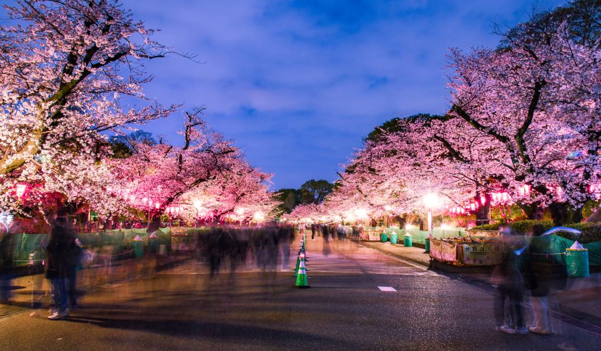

Tokyo
Tokyo, Japan’s bustling capital, is a city that seamlessly blends ancient traditions with cutting-edge technology. From serene shrines and lush gardens to neon-lit skyscrapers and lively markets, Tokyo offers a kaleidoscope of experiences. Stroll through the historic streets of Asakusa, indulge in world-class sushi, or marvel at the towering Tokyo Skytree. Tokyo is a city of endless exploration and unforgettable memories.

Places to Visit
Senso-ji Temple

- Tokyo’s oldest temple, Senso-ji, is a vibrant cultural and spiritual landmark.
- Explore Nakamise Street, lined with traditional shops selling souvenirs and snacks.
Shibuya Crossing

- Experience the world’s busiest pedestrian crossing at Shibuya.
- Surrounded by bright lights and towering buildings, it’s a hub of Tokyo’s urban energy.
Ueno Park

- Ueno Park is a sprawling green space with museums, a zoo, and beautiful cherry blossoms in spring.
- Perfect for a peaceful retreat from the city’s hustle and bustle.